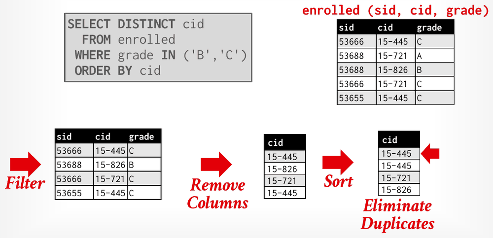
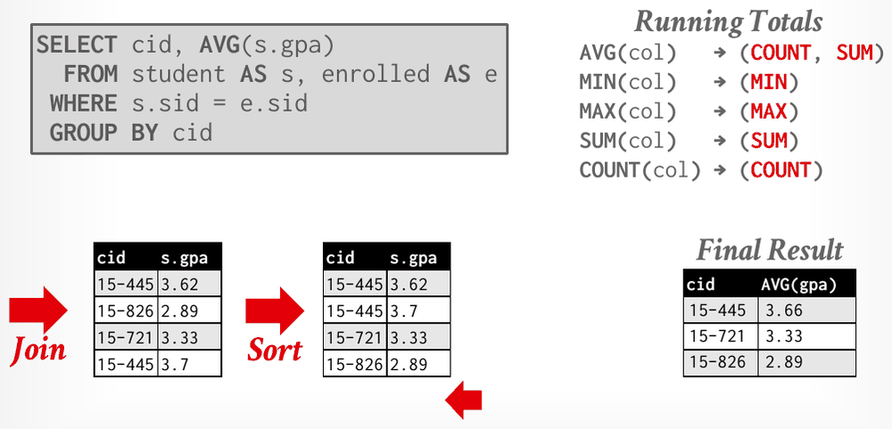
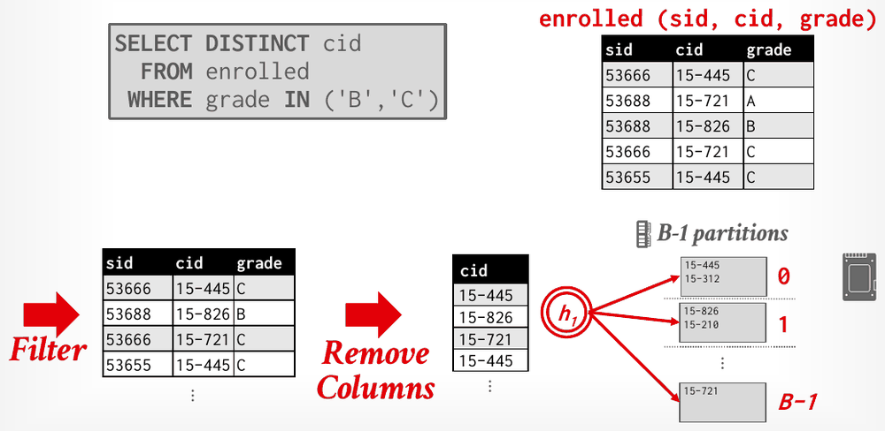
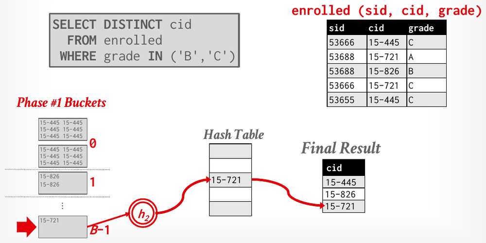

Database Internals in Go · Unit 5 · Lesson 2
Aggregation: Sorting vs. Hashing
Compute DISTINCT and GROUP BY with a sort or with a hash table, keep the right running total for each aggregate, and choose between the two when the data spills to disk.
Unit 0 wrote GROUP BY queries; this lesson is about how a DBMS answers them. An aggregation has to bring together the tuples that share a group key, and Lecture #11 gives two ways to do that: sort the tuples so each group is contiguous, or put them in a hash table keyed on the group. The sort is the external merge sort from the last lesson. The hash version needs its own trick when the hash table doesn't fit in memory, and that trick, partitioning with one hash function and then building a table per partition with another, comes back in Lesson 4's hash joins. Project 3's aggregation is the in-memory hash version.
Unit 0, Lesson 2: why does DuckDB reject WHERE AVG(s.gpa) > 3.9 but accept the same test in a HAVING clause?
Unit 3, Lesson 1: in a linear-probe hash table, a lookup for key K hashes to a slot that holds a different key. What does it do next?
Unit 2, Lesson 1: the buffer pool picks a victim frame whose page is dirty. What must happen before the frame can hold a different page?
What an aggregation has to do
An aggregation collapses the values of an attribute from many tuples into a single scalar, such as one average per course. To do that, the DBMS has to find the tuples with the same grouping attributes quickly. DISTINCT is the same problem with nothing to compute: bring equal values together and keep one. Lecture #11 gives two implementation choices, sorting and hashing.
Sorting aggregation
The sorting approach sorts the tuples on the group key, with an in-memory sort if everything fits in the buffer pool and with external merge sort if it doesn't. Then a sequential scan over the sorted data computes the aggregate, because every group's tuples are now adjacent. The output comes out sorted on the keys.
Slide 24 runs SELECT DISTINCT cid FROM enrolled WHERE grade IN ('B','C') ORDER BY cid. The plan is a pipeline of four steps: filter out the tuples whose grade isn't B or C, remove every column except cid, sort, and scan the sorted list to eliminate duplicates. The order of the first steps matters. The notes say to filter first and sort the filtered data, so that less data has to be sorted, and dropping unneeded columns before the sort shrinks it further.

Running totals
For GROUP BY the scan does more than drop duplicates: it keeps a running total for the current group and updates it with each tuple. What the running total holds depends on the aggregate (slide 25):
AVG(col)keeps (COUNT, SUM).MIN(col)keeps (MIN),MAX(col)keeps (MAX),SUM(col)keeps (SUM), andCOUNT(col)keeps (COUNT).
AVG is the one that needs two numbers. An average alone can't absorb another value correctly without knowing how many values it already covers; with (COUNT, SUM), the DBMS adds 1 and the value, and divides only when it emits the group.

#11 Sorting & Aggregation Algorithms, "Sorting aggregation" (48:50), slides 23–25: the DISTINCT pipeline and the running-totals build for AVG.
Hashing aggregation
Slide 26 asks what happens when the query doesn't need the data ordered: forming the groups of a GROUP BY, or removing the duplicates of a DISTINCT, with no ORDER BY. Then hashing is the better alternative. It only has to bring equal keys together, and it can be computationally cheaper than sorting.
A hashing aggregate populates an ephemeral hash table as the DBMS scans the table, keyed on the group. For each record it checks whether the table already has an entry for the key:
- For
DISTINCT, a key that is already present is a duplicate, and the record is discarded. - For
GROUP BY, the entry's value is the group's running total, and the record updates it.
Slide 33 names the entries (GroupKey → RunningVal). On an insert, if the GroupKey is found, the DBMS updates its RunningVal; otherwise it inserts a new GroupKey → RunningVal pair. With slide 25's four joined tuples and AVG(gpa), the table ends up as 15-445 → (2, 7.32), 15-721 → (1, 3.33) and 15-826 → (1, 2.89). No sort was needed, but nothing puts the groups in order either: they come out in whatever order the hash table returns them.
"If everything fits in memory, then this is easy," says slide 27. If the hash table must spill to disk, the DBMS needs to be smarter.
#11 Sorting & Aggregation Algorithms, "Hashing aggregation" (55:19), slides 26–27: when hashing beats sorting, and the in-memory hash table.
In Go, the in-memory hashing aggregate is a map from the group key to a running-total struct, for example map[string]avgState where avgState holds a count and a sum. A group key over several columns can be a struct of their values, because any comparable struct can be a map key (a slice can't). The Go specification says that the iteration order over maps is not specified, and in practice it changes from run to run. A hash aggregate's output has no order for the same reason, so if the query has an ORDER BY, something still has to sort the groups afterwards.
External hashing aggregate
When the data doesn't fit in memory, the external hashing aggregate divides and conquers in two phases.
Phase 1: partition
A hash function h1 on the group key splits the tuples into partitions on disk. A partition is one or more pages that hold the set of keys with the same hash value, so all the tuples that must be combined end up in the same partition. With B buffers, the DBMS uses B − 1 of them as output buffers, one per partition, and one for reading the input. When a partition's buffer fills up, it is spilled to disk. So phase 1 produces B − 1 partitions.

Phase 2: rehash
For each partition on disk, the DBMS reads its pages into memory and builds an in-memory hash table with a second hash function h2, where the notes require h1 ≠ h2. Then it goes through each bucket of this table to bring the matching tuples together and compute the aggregate, using the same (GroupKey → RunningVal) entries as above.
The second hash function is needed because every key in a partition got there through its h1 value, so h1 tends to send them to the same few buckets again. A different function spreads them out.

Slide 31 states the assumption: each partition fits in memory. The notes say how to make that true: partition recursively, splitting an oversized partition again until every piece fits. Partition 0 above shows why a partition can outgrow memory. Every 15-445 tuple goes there, and with a popular key that can be many pages.
#11 Sorting & Aggregation Algorithms, "External hashing" (56:49), slides 28–35: the partition and rehash builds, hashing summarization, and the lecture's conclusion.
Choosing between sorting and hashing
Slide 35 calls the choice "subtle": it depends on the optimizations done in each case. For sorting, the lecture lists chunking I/O into large blocks to amortize costs, and the double buffering from the last lesson. The notes give the usual answer: hashing is often more efficient, unless the data is already sorted beforehand or the output must be sorted, for example because of an ORDER BY. In those two cases the sort is either free or needed anyway, and sorting aggregation gets the grouping for nothing.
What Project 3 builds
Project 3's aggregation is a hashing aggregate. According to the Fall 2025 writeup and BusTub at d49b823:
- The hash table is keyed on the group-by columns. The writeup lets you assume that it fits in memory, so there is no partitioning phase, and the table doesn't have to be backed by buffer pool pages. BusTub's version wraps a C++
std::unordered_map. - BusTub's aggregate types are
COUNT(*),COUNT,SUM,MINandMAX. There is no AVG, so no (COUNT, SUM) pair. - The writeup calls aggregations pipeline breakers: no group is final until the child's last tuple has been read. Lecture #13 (Lesson 5) explains pipelines.
- A
HAVINGclause becomes a separate filter above the aggregation, which is what HAVING meant in Unit 0: groups are filtered after they exist. - The writeup's hints add two details from SQL: on an empty table,
COUNT(*)returns 0 and the other aggregates return NULL, and both the aggregated values and the group-by columns can be NULL.
Work it out
-
What to think about
What does each aggregate keep as its running total? Can one RunningVal hold the state for both aggregates?
The method
Make each RunningVal (MAX, (COUNT, SUM)). On the first tuple of a group, insert (gpa, (1, gpa)). On later tuples, keep the larger MAX, add 1 to COUNT and add gpa to SUM. At the end, emit MAX and SUM / COUNT.
The result
15-445 → (4.0, (3, 10.5)), emitting 4.0 and 3.5. 15-721 → (3.9, (2, 6.7)), emitting 3.9 and 3.35. 15-826 → (3.0, (1, 3.0)), emitting 3.0 and 3.0. The order of the three output rows is whatever order the hash table returns.
Check your understanding
In the sorting aggregation for SELECT DISTINCT cid FROM enrolled WHERE grade IN ('B','C') ORDER BY cid, why does the plan filter and remove columns before it sorts?
The sorted input to SELECT cid, AVG(s.gpa) … GROUP BY cid is (15-445, 3.62), (15-445, 3.7), (15-721, 3.33), (15-826, 2.89). What running total does the scan hold for 15-445 just before it emits the group, and what does it emit?
An external hashing aggregate runs with B = 100 buffer pages. How many partitions does phase 1 create, and what does phase 2 do with each one?
Phase 2 of the external hashing aggregate assumes that each partition fits in memory. What does the DBMS do when one doesn't?
When is sorting aggregation the better choice than hashing aggregation?
Primary sources: CMU 15-445/645 Fall 2025 Lecture #11 slides 23–35 and notes (section 3); the Project #3 writeup (aggregation section); BusTub src/include/execution/plans/aggregation_plan.h and src/include/execution/executors/aggregation_executor.h at commit d49b823; the Go specification (map types and for statements with range clauses).